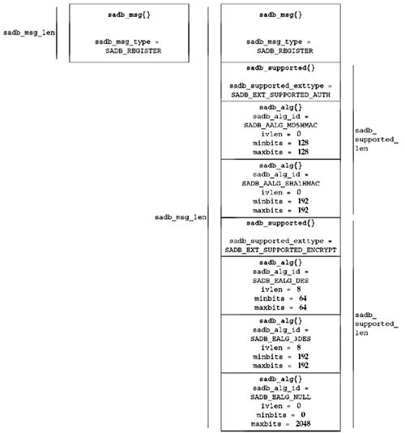

| [ Team LiB ] |
|
19.5 Dynamically Maintaining SAsFor greater security, periodic rekeying is required. This is usually performed by a protocol such as IKE (RFC 2409 [Harkins and Carrel 1998]).
To learn when an SA is required between a new pair of hosts, a daemon registers itself with the kernel using the SADB_REGISTER message, specifying the type of SA it can handle in the sadb_msg_satype field from the values in Figure 19.3. If a daemon can handle multiple SA types, it sends multiple SADB_REGISTER messages, each registering a single type. In its SADB_REGISTER reply message, the kernel includes a supported algorithms extension, indicating what encryption and/or authentication mechanisms are supported with what key lengths. The supported algorithms extension is described by an sadb_supported structure, shown in Figure 19.13; it simply contains a series of encryption or authentication algorithm descriptions in sadb_alg structures following the extension header. Figure 19.13 Supported algorithms extension.
struct sadb_supported {
u_int16_t sadb_supported_len; /* length of extension + algorithms / 8 */
u_int16_t sadb_supported_exttype; /* SADB_EXT_SUPPORTED_{AUTH, ENCRYPT} */
u_int32_t sadb_supported_reserved; /* reserved for future expansion */
};
/* followed by algorithm list */
struct sadb_alg {
u_int8_t sadb_alg_id; /* algorithm ID from Figure 19.8 */
u_int8_t sadb_alg_ivlen; /* IV length, or zero */
u_int16_t sadb_alg_minbits; /* minimum key length */
u_int16_t sadb_alg_maxbits; /* maximum key length */
u_int16_t sadb_alg_reserved; /* reserved for future expansion */
};
One sadb_alg structure follows the sadb_supported extension header for each algorithm supported by the system. Figure 19.14 shows a possible reply to a message registering for SA type SADB_SATYPE_ESP. Figure 19.14. Data returned from kernel for SADB_REGISTER command. Our first example program, shown in Figure 19.15, simply registers with the kernel for a given mechanism and prints the supported algorithms reply. Figure 19.15 Program to register on key management socket.key/register.c
1 void
2 sadb_register(int type)
3 {
4 int s;
5 char buf[4096]; /* XXX */
6 struct sadb_msg msg;
7 int goteof;
8 int mypid;
9 s = Socket(PF_KEY, SOCK_RAW, PF_KEY_V2);
10 mypid = getpid();
11 /* Build and write SADB_REGISTER request */
12 bzero(&msg, sizeof(msg));
13 msg.sadb_msg_version = PF_KEY_V2;
14 msg.sadb_msg_type = SADB_REGISTER;
15 msg.sadb_msg_satype = type;
16 msg.sadb_msg_len = sizeof(msg) / 8;
17 msg.sadb_msg_pid = mypid;
18 printf("Sending message:\n");
19 print_sadb_msg(&msg, sizeof(msg));
20 Write(s, &msg, sizeof(msg));
21 printf("\nReply returned:\n");
22 /* Read and print SADB_REGISTER reply, discarding any others */
23 for ( ; ; ) {
24 int msglen;
25 struct sadb_msg *msgp;
26 msglen = Read(s, &buf, sizeof(buf));
27 msgp = (struct sadb_msg *) &buf;
28 if (msgp->sadb_msg_pid == mypid &&
29 msgp->sadb_msg_type == SADB_REGISTER) {
30 print_sadb_msg(msgp, msglen);
31 break;
32 }
33 }
34 close(s);
35 }
Open PF_KEY socket1–9 We open the PF_KEY socket. Store PID10 Since messages will be addressed to us using our PID, we store it for comparison later. Create SADB_REGISTER message11–17 Just like SADB_DUMP, the SADB_REGISTER message does not require any extensions. We zero out the message and then fill in the individual fields needed. Display and write message to socket18–20 We display the message that we're sending using our print_sadb_msg function, and send the message to the socket. Wait for reply23–33 We read messages from the socket and wait for the reply to our register message. The reply is addressed to our PID and is a SADB_REGISTER message. It contains a list of supported algorithms, which we print with our print_sadb_msg function. ExampleWe run the register program on a system that supports several more protocols than are described in RFC 2367.
macosx % register -t ah
Sending register message:
SADB Message Register, errno 0, satype IPsec AH, seq 0, pid 20746
Reply returned:
SADB Message Register, errno 0, satype IPsec AH, seq 0, pid 20746
Supported authentication algorithms:
HMAC-MD5 ivlen 0 bits 128-128
HMAC-SHA-1 ivlen 0 bits 160-160
Keyed MD5 ivlen 0 bits 128-128
Keyed SHA-1 ivlen 0 bits 160-160
Null ivlen 0 bits 0-2048
SHA2-256 ivlen 0 bits 256-256
SHA2-384 ivlen 0 bits 384-384
SHA2-512 ivlen 0 bits 512-512
Supported encryption algorithms:
DES-CBC ivlen 8 bits 64-64
3DES-CBC ivlen 8 bits 192-192
Null ivlen 0 bits 0-2048
Blowfish-CBC ivlen 8 bits 40-448
CAST128-CBC ivlen 8 bits 40-128
AES ivlen 16 bits 128-256
When the kernel needs to communicate with a peer and policy says that an SA is required but one is not available, the kernel sends an SADB_ACQUIRE message to key management sockets that have registered the SA type required, containing a proposal extension describing the kernel's proposed algorithms and key lengths. The proposal may be a combination of what is supported by the system and preconfigured policy that limits what is permitted for this communication. The proposal is a list of algorithms, key lengths, and lifetimes, in order of preference. When a key management daemon receives an SADB_ACQUIRE message, it performs the acts required to choose a key that fits one of the kernel's proposed combinations, and installs this key in the kernel. It uses the SADB_GETSPI message to ask the kernel to select an SPI from a desired range. The kernel's response to the SADB_GETSPI message includes creating an SA in the larval state. The daemon then negotiates security parameters with the remote end using the SPI supplied by the kernel, and uses the SADB_UPDATE message to complete the SA and cause it to enter the mature state. Dynamically created SAs generally have both a soft and a hard lifetime associated with them. When either lifetime expires, the kernel sends an SADB_EXPIRE message, indicating whether the soft or hard lifetime has expired. If the soft lifetime has expired, the SA has entered the dying state, during which it can still be used but a new SA must be obtained. If the hard lifetime has expired, the SA has entered the dead state, in which it is no longer used for security purposes and will be removed from the SADB. |
| [ Team LiB ] |
|